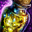
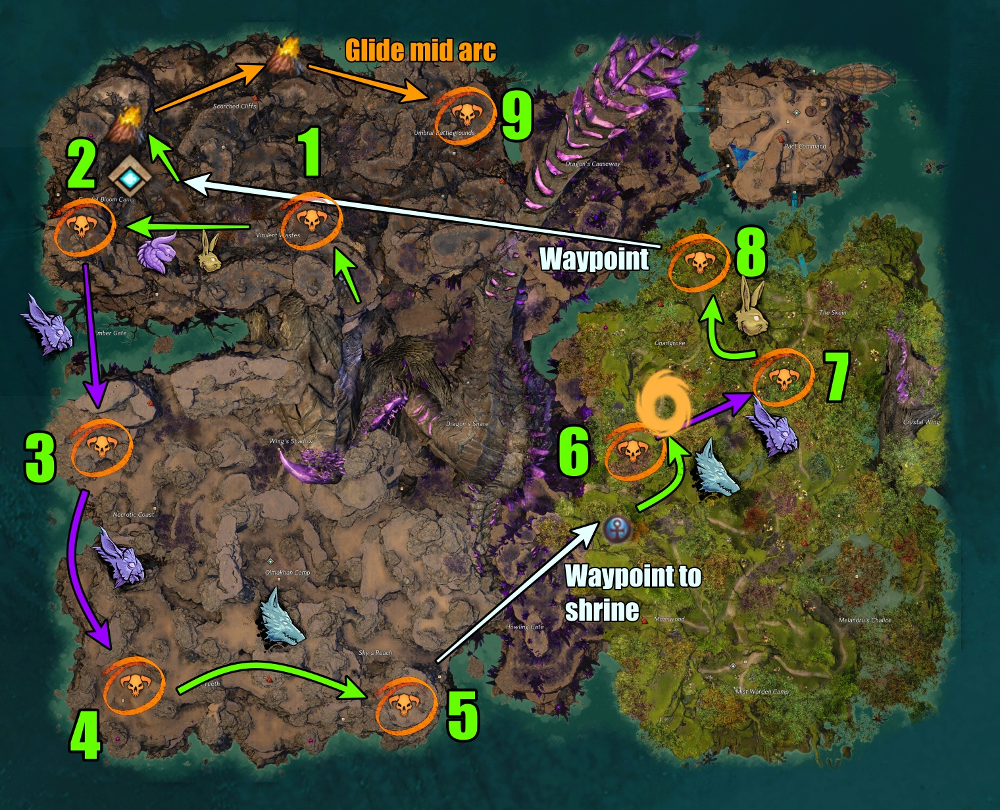

Farming
Potential Gold Per Hour
| Farm Type | Farm | Benchmark |
|---|
| Currency | Info | |
|---|---|---|
| Mistborn Mote |  | Gathered from meta, nodes, Coffers |
| Volatile Magic |  |
Gathered from all mobs, meta, most events, Mistborn Mote, Glyph of Bounty |
Summary:
This guide is assuming the map is fresh. The objective of the map is to escort NPCs to 3 camps of the map: Mist Warden, Olmakhan, Crystal Bloom. In each of these camps, there are series of small events that need to be completed to progress the meta, in tiers. Once each camp reaches the max tier of 4, more series of smaller defense/escort events will begin at the same time. Once all of those are completed, then the meta begins. The map ends with a champ train that will contain most of the loot so make sure to stay after the meta! The goal is to progress the map as fast as possible while still generating enough keys for the final chests.
Recommendations:
At least 27 Mistborn Keys are needed for the final chests and champ train chests. Every event rewards 1 so it's best to follow the commander as tight as possible to tag every event. This will be the main source for rewards.
Below will detail every phase to give you an idea of what you can expect for commanding or following a Dragonfall train.
Bridges
Even tagging one of these events is good. I would make sure to tag the bridge event that the commander tag is planning to start. If the commander plans to start in the Mist Warden camp, make sure to tag the bridge in the Mist Warden area.
Escorts
1. Mist Warden
2. Crystal Bloom
3. Olmakhan
It is important to complete and tag all escorts because they offer 3 Mistborn Coffers each . These coffers will be the main source of loot.
It is entirely possible that each escort will start at the same time or relatively around the same time. If that is the case, prioritize Mist Warden as fast as possible. If you're the commander, make sure to communicate what your plan is with the map. Pay attention to each progress as you can see the escort symbols on the map. Crystal Bloom should be next, but if Olmakhan made more progress, move that instead.
To make the escorts go more quickly, give the NPCs superspeed and to clear out every mob in the way, regardless of being part of the event. The NPCs will move towards anything red.
Upgrading Camps
- Culls (x3)
- Brandstorms
- Champs
At the same time, depending on the tier, there are "main" events that need to complete to progress each tier. These events take longer than the events listed above, but should be done at least before the camp progress bar fills.
At tier 2 until 4, there are occasionally Mender events. These events are a short escort event that contains a champion at the end and rewards 3 Mistborn Coffers. These spawn at each waypoint (except the main) and there will be a tangerine symbol above their head. This symbol can be seen throughout the map unless a player started it.
The priority of events should be: Main events → Menders → Culls → Brandstorms → Champs
There are events such as:
- Patrols
- DERVS/Effigy/Abomination escorts
- Charr Pilots
- Bridges
For these, I would not recommend forcusing on them, but if they happen to be in progress and near completion, might as well poke them.
Pre-Meta
3 "Defend allies as they construct a Brandstorm disruptor"
2 "Protect the engineers while they install ley reflectors in the [camp]"
Each event does not require a large amount of people. The Brandstorm disruptors take the longest as there needs to be 3 areas to defend for each event. It is best to split the zerg to start the meta as fast as possible.
If keys are an issue or you joined in late to the party, this is the best time to tag events since there are many and none of the mobs drop loot (but make sure to progress the events too).
Meta
Dragonblood Spears destroys shields of the bosses.
Embers destroys Branded turrets throughout the fight.
Depending on what the commander decides (to split into groups or not), the picture above shows the chain of events for Weakpoints. The meta will always begin with 3 to start off with. Regardless, they will spawn in that order after each completion.
12 Weakpoints are needed to complete the meta. Each Weakpoint will have a crystal that players will DPS. This event can only activate if more than 3 players are in the area (white circle). Moments after the crystal shows up, a Mender will try to mend it while giving the crystal retaliation (but not as a boon). If the group has major DPS, you can outheal the Mender. Otherwise, defeat the Mender while cleaving the crystal.
At 6/12 Weakpoints defeated, players will need to split into three groups to fight legendary bosses: Wrathbringer, Riftstalker Matriarch, Hydra. Similar to Auric Basin's meta, all legendaries will need to be defeated within 30 seconds of each other . If not, they will regenerate health and the process repeats. Try your best to communicate with the map to hold bosses (around 20% HP) until everyone is ready to burst DPS. Also communicate to folks that are new to not defeat a boss before others are ready.
Pylons are floating throughout the meta. If there are more than 10 Pylons floating at a time, the event is stalled. Make sure to have a few roamers keep Pylons at a low. This can be achieved easily by a Skyscale user. You will get a special action key to chain yourself to the pylon to allow it to fall.
Champ Train

EMPs from waystations are a great way to break bars easily and provide more opportunities for DPS.
After each boss, there are 3 Mistborn Coffers that spawn.